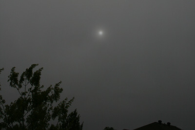

×

Altocumulus
Altocumulus clouds have several patchy white or gray layers, and seem to be made up of many small rows of fluffy ripples. They are lower than cirrus clouds, but still quite high. They are made of liquid water, but they don’t often produce rain.

Altostratus
Altostratus clouds are gray or blue-gray mid-level clouds composed of ice crystals and water droplets. The clouds usually cover the entire sky.

Nimbostratus
Nimbostratus clouds are dark, gray clouds that seem to fade into falling rain or snow. They are so thick that they often blot out the sunlight.